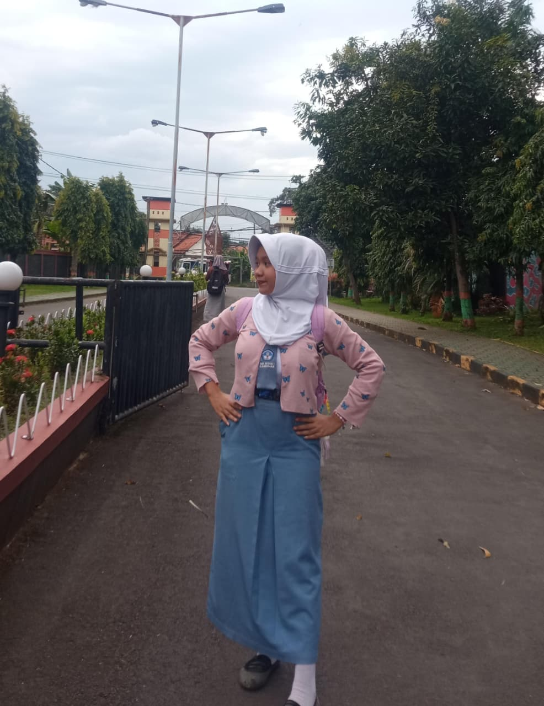

Nama saya adalah Intan Retno Sari, Saya adalah seorang remaja berusia 15 tahun. Saya memiliki hobi yang lumayan jarang diminati oleh remaja seusia saya yaitu berkebun. Saya mulai suka menanam dari kecil saat masih SD.
Foto Saya

Nama saya adalah Intan Retno Sari, Saya adalah seorang remaja berusia 15 tahun. Saya memiliki hobi yang lumayan jarang diminati oleh remaja seusia saya yaitu berkebun. Saya mulai suka menanam dari kecil saat masih SD.
Bisa dibilang saya adalah pencinta alam, saya menyukai banyak tanaman seperti bunga, buah dll. Jika saat saya lagi emosi atau marah saya melampiaskanya dengan menanam dengan itu membuat hati saya jadi tenang.